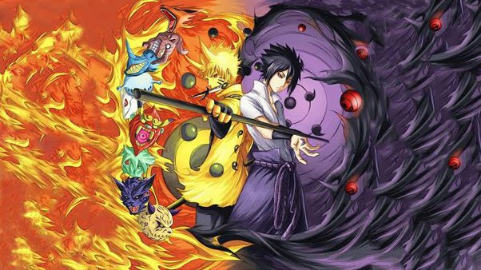
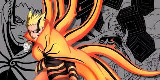

Anime Art at its Greatest
The History and Growth of Anime Art
Anime art is one of Japan’s most powerful creative exports. What makes it special is how it blends emotional storytelling, traditional drawing styles, and modern digital animation. Every frame often carries a sense of balance and detail rooted in Japanese culture from the quiet beauty of nature to the spirit of determination seen in its characters. Anime isn’t just entertainment; it’s an artistic reflection of how Japan turns imagination into emotion.
Influence of Anime on Culture and Imagination
Anime art has changed the way people view storytelling all over the world. It brings emotions to life through color, light, and movement. Many artists use anime as a way to show courage, friendship, and personal growth. The art styles can shift from soft and peaceful to bold and explosive, showing how emotion can drive every scene. Anime has influenced global media, fashion, and even gaming culture, connecting fans across generations. The creativity found in anime continues to inspire new artists every day, proving that imagination is one of Japan’s strongest exports.
- Unique storytelling that combines art and emotion
- Detailed character design that expresses personality
- Rich worlds that inspire imagination and creativity
- Strong global influence on games, art, and culture
The Anime Art Style: Why Is It So Popular? (Winged Canvas)
The Aesthetics of Manga Art (Where Creativity Works)